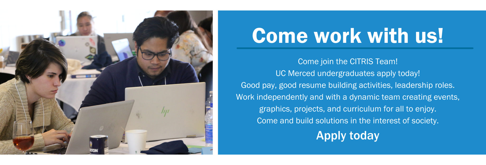

Join Our Student Intern Team for Fall 2022!
June 30, 2022
UC Merced
CITRIS is looking for hard working and motivated UC Merced undergrads to fill various positions. All job applications can be found on handshake or at the links below. If you think you would be a good fit, apply today! We will be reviewing applications on an ongoing basis until positions have been filled.
CITRIS Student Lead –CITRIS seeks student to lead intern multi-disciplinary team. As the Center for Information Technology Research in the Interest of Society at UC Merced, we deliver high-quality tech-related program for students, community learners, and faculty. The successful candidate will possess and practice excellent communication skills, organizational processes and develop project management protocols for education, outreach, events, and research.
CITRIS Videographer - CITRIS seeks a creative individual to make videos for YouTube and social media to share the research and events of our organization. CITRIS delivers a number of lectures that we would like to promote online and turn into shorter useful videos. We'd also like to promote team members, faculty and researchers and their research to a wider audience.
CITRIS Multimedia and Outreach Coordinator - The CITRIS Multimedia and Outreach Coordinator is the messenger of all research and outreach programs. The candidate will serve to produce images, graphics, videos, TikToks, Twitter messages and more to connect with student groups and engage community, industry and educational partners in our events, trainings and promoting our research.
CITRIS NexTech Educator – This position requires in depth knowledge of design software and must be able to conceptualize visuals based on verbal directives. Knowledge of Adobe Photoshop, Illustrator, InDesign, & Premiere Pro is required to create graphics, flyers and posters for CITRIS events, programs, projects, social media, website and initiatives.
Videographer Intern – Teach the CITRIS NexTech Robotics and FLY CITRIS course program that teaches middle school students programming, design, drones and embedded systems. *Develop curriculum and schedule for introductory programming course and workshops (C and block-based) using VEX IQ Robots and Tello drones equipment. *Coordinate course program schedule with middle school teachers every semester and work with community partners to identify new options. *Work with CITRIS team and fellow students with professionalism and excellent communication, developing new curriculum units *Maintain current tech supply inventory and request replacement parts as necessary *Provide support to department staff (Director, Associate Director, Program Director, etc) as necessary *Coordinate with other campus departments and external partners as necessary *Support other CITRIS projects as necessary *Teach in-person, online, and on weekend in short or long sessions